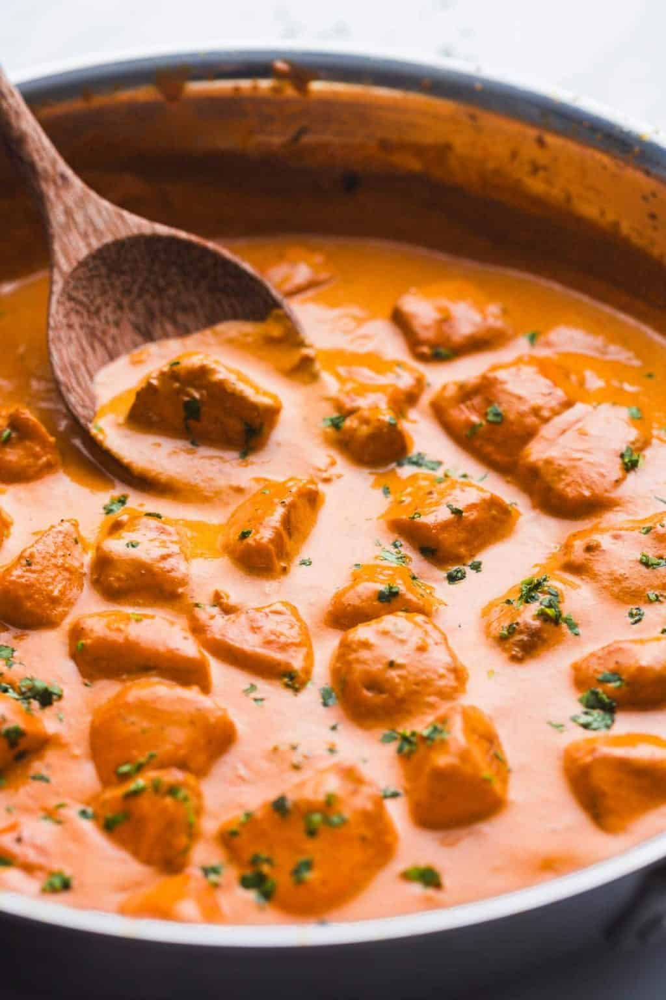
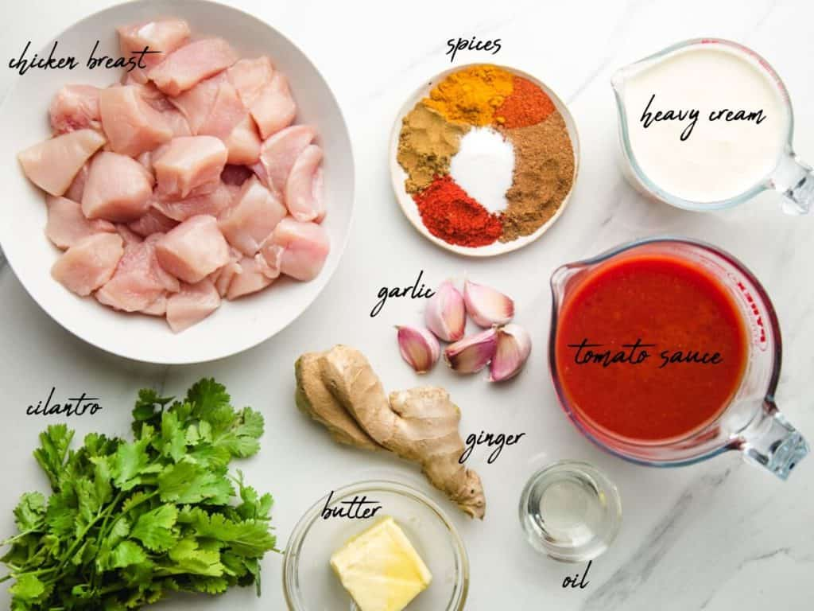
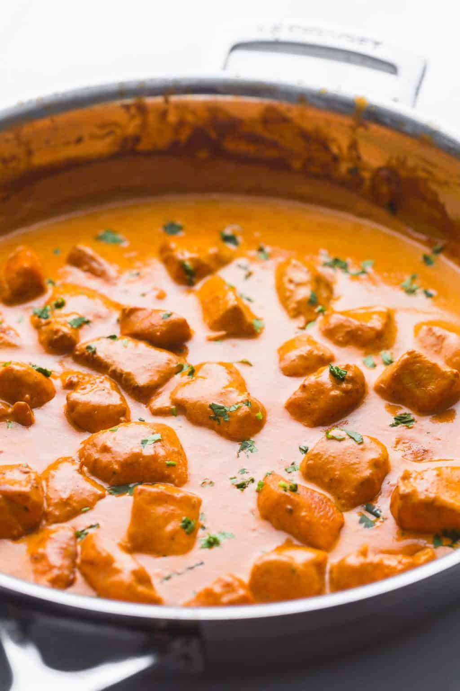

Butter Chicken

What is Butter Chicken?
Butter chicken, traditionally known as murgh makhani, is an Indian dish originating in New Delhi. It is a type of
curry made from chicken with a spiced tomato and butter sauce. Its sauce is known for its rich texture.
Butter Chicken Ingredients
For the ingredients you will need:

- 1 tablespoon vegetable oil
- 2 tablespoons butter divided
- 2 pounds (900 grams) chicken breasts skinless, boneless, diced into bite-size pieces
- 5 cloves garlic about 5 teaspoons, minced
- 2 inch (5 cm) fresh ginger grated
- 1 teaspoon ground cumin
- 2 teaspoons garam masala
- ½ teaspoon chili powder optional
- 1 teaspoon smoked paprika
- 1 teaspoon ground turmeric
- 1 teaspoon salt
- 17 ounces (500 grams) tomato sauce or passata
- ½ cup (125 ml) heavy whipping cream
- 2 tablespoons fresh parsley, mint, or cilantro for garnish
Instructions
- In a frying pan, heat vegetable oil and melt 1 tablespoon of butter. Brown the diced chicken breast until golden. Move the chicken to one side, and melt the rest of the butter.
- Add the garlic and ginger, and cook until fragrant (about 1 minute). Add all of the spices, and the salt, stir and cook for a minute then add the passata.
- Give everything a mix, cover with a lid and simmer on medium heat for 5-10 minutes for the chicken to cook and the flavors to settle.
- Carefully open the lid, and stir in the cream, and allow the sauce to reduce a little. Serve warm over rice with chopped parsley, mint, or cilantro.

Yup Butter Chicken is ready!